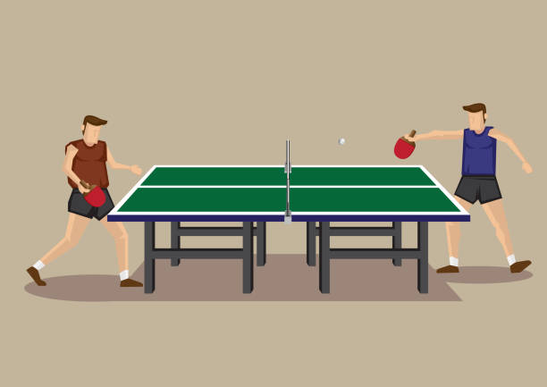

1.Please keep the computer screen straight and mover yourself 3-4 from the laptop.
2.Move your right wrist ascending and descending manner, a red dot should appear on your right wirst.
3.Now, press the play button and again move yourself 3-4 feet from the laptop.
4.The red paddle is yours and it will move as per the movement of your right wrist.
